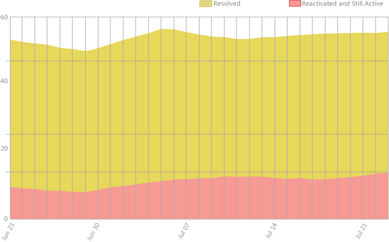
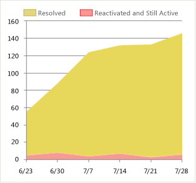
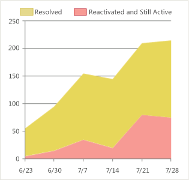
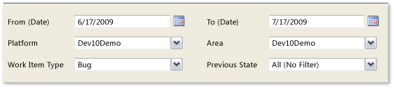

As the team resolves and closes bugs, you can use the Reactivations report to determine how effectively the team is fixing bugs. Reactivations generally refer to bugs that have been resolved or closed prematurely and then reopened. The reactivation rate is also referred to as the fault feedback ratio.
You can use the Reactivations report to show either bugs or Use Cases that have been reactivated. As a product owner, you might want to discuss acceptable rates of reactivation with the team. A low rate of reactivations (for example, less than 5%) might be acceptable depending on your team's goals. However, a high or increasing rate of reactivations indicates that the team might need to diagnose and fix systemic issues.
For information about how to access, refresh, or manage reports, see Reports (GovDev).
|
|
|---|
|
This report requires that the team project collection that contains your team project
was provisioned with SQL Server Reporting Services. This report is not available
if
|
|
In this topic |
You can use this report to answer the following questions :
|
Required Permissions
To view the report, you must be assigned or belong to a group that has been assigned the Browser role in SQL Server Reporting Services. For more information, see Add Users to Team Projects or Managing Permissions.
 Data
in the Report
Data
in the Report
The Reactivations report shows an area graph of the number of bugs or use cases that are in a resolved state or that have been reactivated from the closed state. The data is derived from the data warehouse. The graph depicts the number of items based on the time duration and filters that you specify, as the following illustration shows.
You can filter the Reactivations report in the following ways:
-
Change the start and end dates for the report.
-
Filter the bugs and use cases that are counted in the report by specifying iteration and area paths, work item types, and previous state of the work items.
For more information, see Filtering the Reportlater in this topic.
Required Activities for Tracking Use Cases and Bugs
For the Reactivations report to be useful and accurate, the team must perform the following activities:
-
Define Use Cases and bugs, and specify their Iteration and Area paths.
-
Update the State of use cases and bugs as they progress from active to closed.
Setting
the Duration of the Iteration
To understand the reactivation rate of your current iteration, the start and end dates for the report must match those of your current iteration cycle.
To change the duration of the iteration
-
Next to Iteration Start (Date) or Iteration End (Date), click the calendar icon, and then click a date.
-
Click View Report.
Interpreting
the Report
You should expect the Reactivations report to vary based on where you are in your product development cycle. Early iterations should exhibit very few reactivations. As bugs and use cases are closed, you will want to review the rate of reactivations.
The Reactivations report displays information that you can use to detect whether the team is reactivating a high number of bugs or use cases. The reactivation rate counts the number of supposedly fixed bugs whose fixes do not work. These reactivations can create a harmful cycle of rework that interferes with making progress on planned tasks.
Questions That the Report Answers
You can review the report to answer these questions:
-
How many bugs have been reactivated in the current iteration?
-
How many Use Cases have been reactivated in the current iteration?
-
Is the team resolving and closing reactivated bugs and use cases at an acceptable rate?
Healthy Version of Report
A healthy version of the Reactivations report shows a steady progress in resolving and closing bugs as the following illustration shows. The total rate of work item reactivation is 5% or less, and it does not increase during the iteration. Small fluctuations might be acceptable, based on your team goals. The lower your reactivation rate, the more progress your team can make overall.
Unhealthy Version of Report
The following illustration shows an unhealthy version of the Reactivations report.
The following table describes the indications of an unhealthy version of this report, in addition to providing some suggested questions to consider.
|
Indicator |
Questions to ask |
|---|---|
|
The team is reactivating a high number of bugs. You should consider the reactivation rate as a percentage of the overall number of bugs that the team is finding. A high rate of bug reactivation might indicate that the team is closing bugs prematurely. It is a warning sign of project dysfunction. Reactivations introduce extra work into the product cycle, which often doubles the total effort that is required to complete the corresponding work. |
|
|
The team is reactivating a high number of use cases. You should consider the reactivation rate of use cases as a percentage of the overall number of use cases that the team is closing. A high rate of use case reactivation might indicate that other issues warrant investigation. |
|
|
The number of reactivations is growing. When the number of reactivations grows, reactivated bugs or use cases are not being fixed. You might want to reassess team priorities for fixing reactivated bugs or use cases. |
|
Filtering
the Report
You can filter the Reactivations report in the following ways:
-
Change the start and end dates for the report.
-
Filter the bugs or use cases that the report represents by specifying iteration and area paths, work item types, and the previous states for the work items.
The following illustration shows the available filters:
To filter the work items that appear in the report
-
Perform one or more of the following actions:
-
In the Iteration and Area lists, select the check box of each iteration or product area to include.
-
In the Work Item Type and Previous State lists, select the check box of each work item type and state to include.
-
-
Click View Report.